À 20 minutes du Château Puygrenier
Que faire à Saint-Émilion ?
Le guide week-end.
Vignobles UNESCO, caves souterraines, montgolfière au lever du soleil, gastronomie de terroir — Saint-Émilion est à 20 minutes. Voici l'essentiel à ne pas manquer.
Patrimoine UNESCO
La cité médiévale de Saint-Émilion
Inscrite au patrimoine mondial de l'UNESCO en 1999 au titre de paysage culturel viticole, Saint-Émilion concentre une densité unique de monuments historiques dans un écrin de vignes.
Prévoir une demi-journée minimum. Parkings payants en saison — arriver tôt le matin.
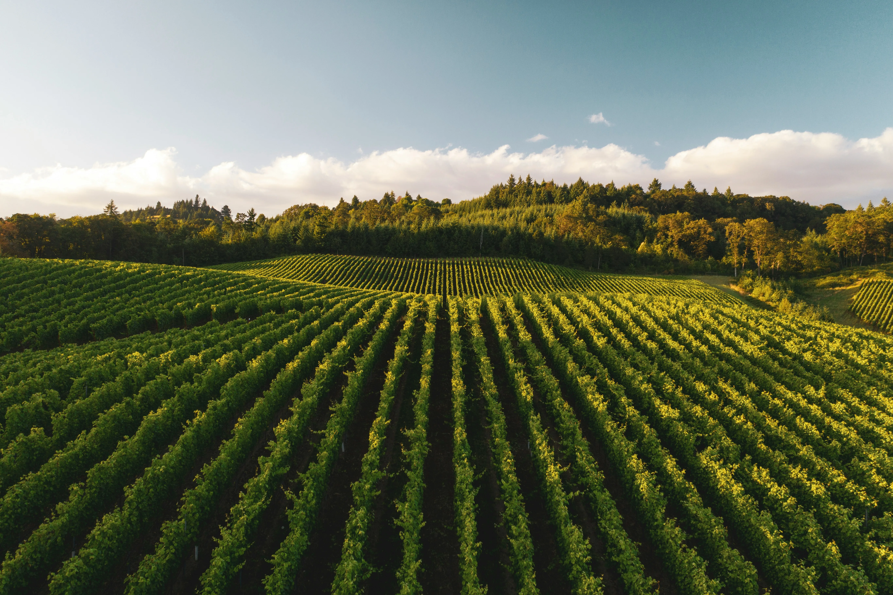
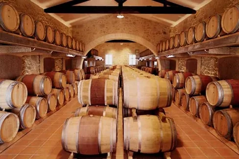

Œnotourisme
Vignobles & Grands Crus : l'âme de Saint-Émilion
L'appellation Saint-Émilion (5 400 ha) regroupe deux sous-appellations et des centaines de châteaux ouverts à la visite. Voici les plus accessibles pour un week-end.
L'Office de Tourisme de Saint-Émilion propose une liste quotidienne des domaines ouverts sans réservation.
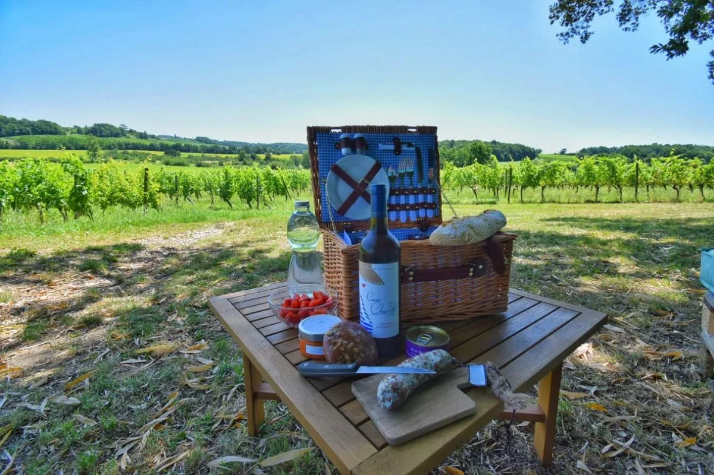
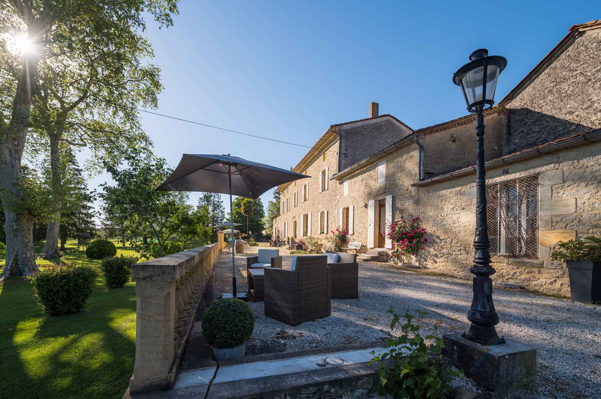
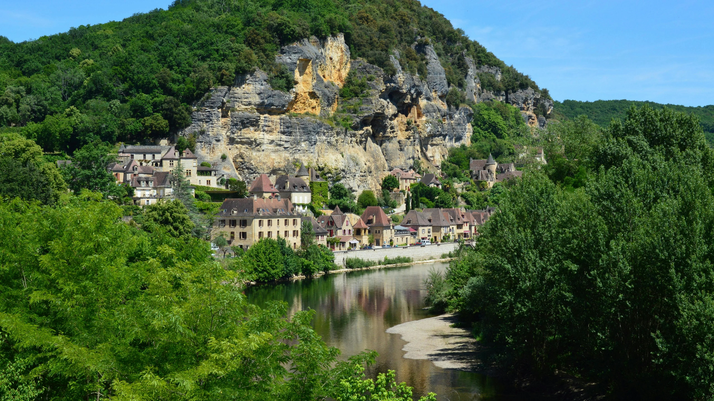
Activités & sensations
Au-delà du vin : que faire autour de Saint-Émilion
Saint-Émilion est le point de départ d'expériences qui transforment un week-end ordinaire en souvenir inoubliable.
Les Montgolfiades de Saint-Émilion (11–13 sept. 2026) : 15 montgolfières simultanées au-dessus du vignoble UNESCO — accès terrain gratuit.
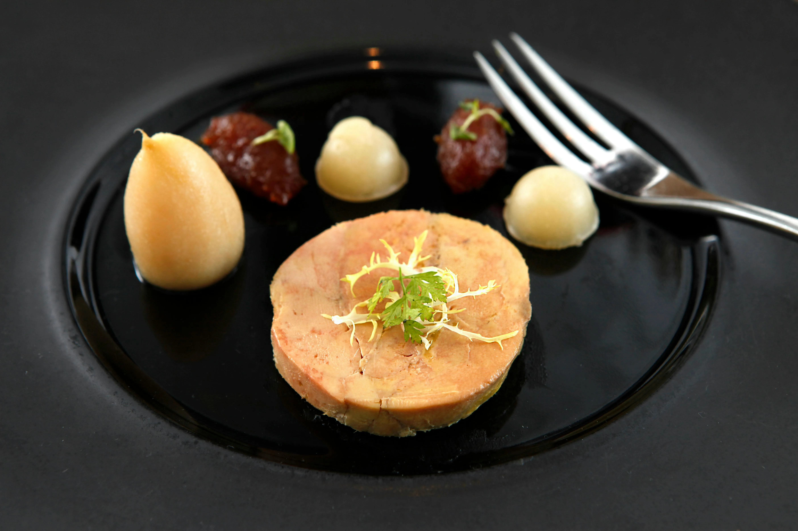
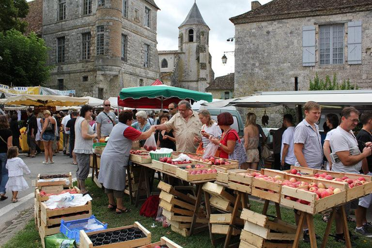
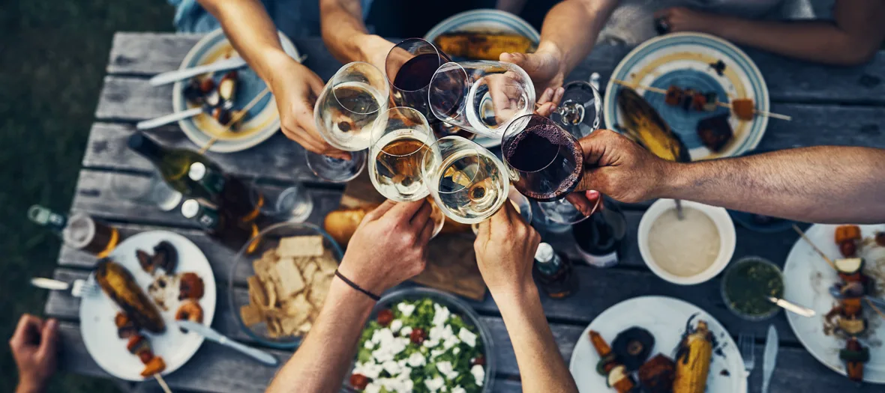
Gastronomie
Manger & boire autour de Saint-Émilion
La gastronomie du Libournais mêle les grandes tables bordelaises et les adresses de terroir que les vignerons fréquentent eux-mêmes.
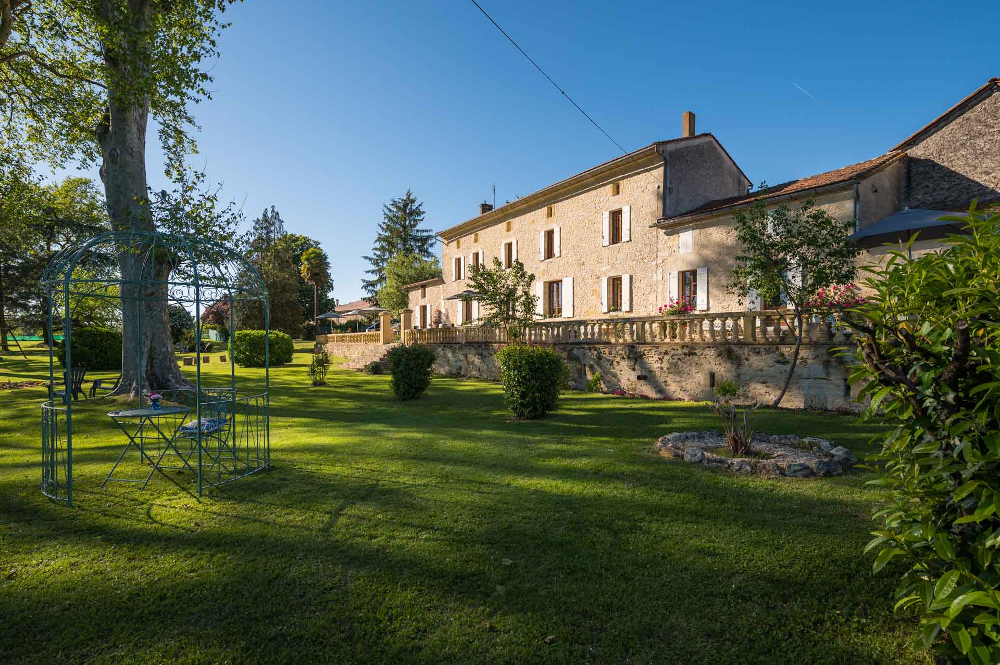
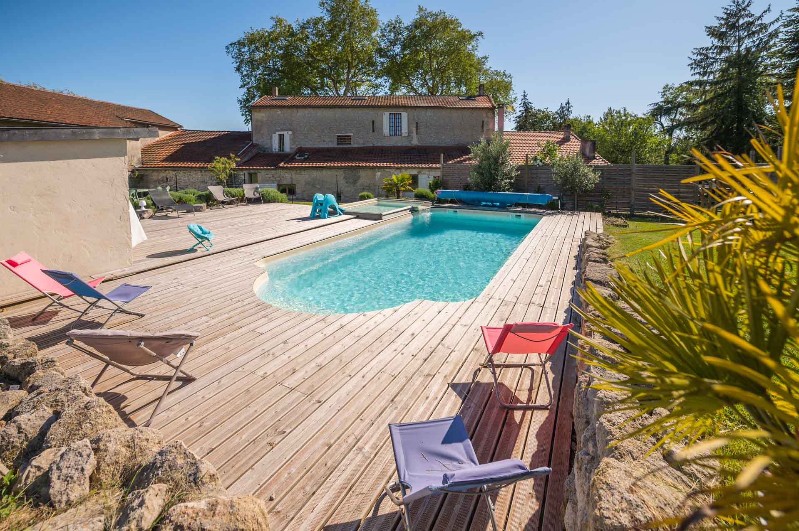
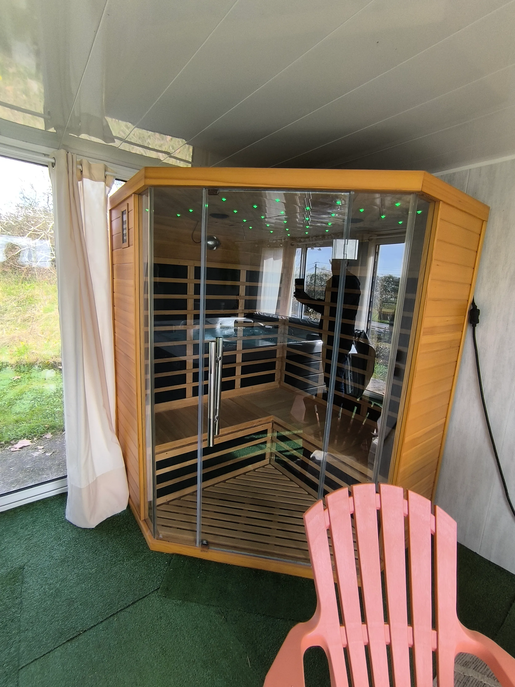
Votre point de chute
Château Puygrenier — à 20 min de Saint-Émilion
Séjourner au Château Puygrenier, c'est avoir Saint-Émilion à 20 minutes, le Périgord à 30, et un domaine de caractère pour rentrer le soir — piscine, spa privatif et table d'hôtes vous attendent.
Prêt pour votre week-end ?
Saint-Émilion vous attend.
Réservez votre séjour.
On répond en moins de 24h. Envoyez-nous vos dates et le nombre de personnes, on s'occupe du reste.